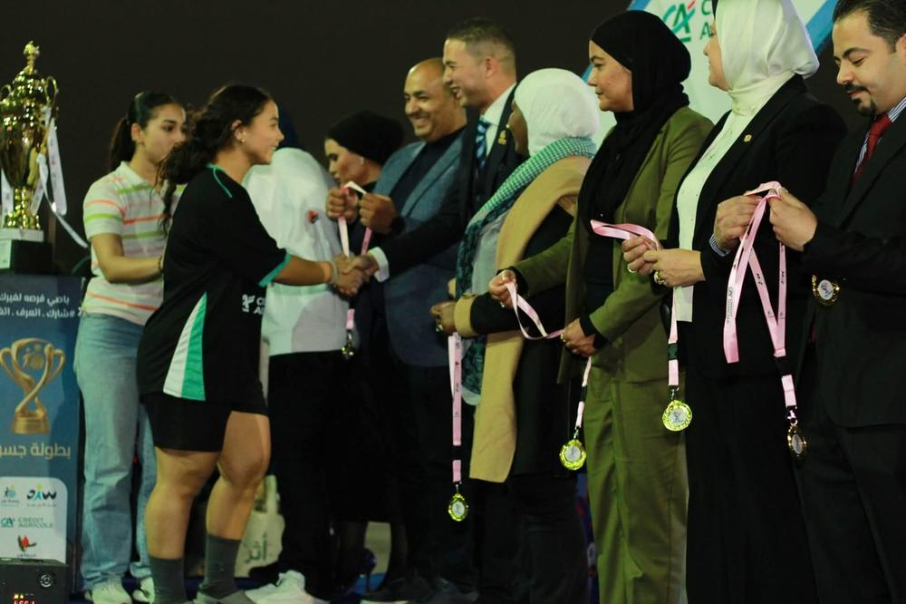

Registered No. 12593 of 2025 with the Ministry of Social Solidarity, working across Egypt. The first development institution in Egypt founded and run by young people from orphanages, who lived the experience and turned it into a source of inspiration for others (experience, science, and field expertise of up to 25 years, brought together in one entity).
A generation of young people who grew up without parental care, able to build their own future with full competence and no barriers, on the principle of equal opportunity, creating lasting impact, overcoming social challenges and becoming active partners in building the nation.
We turn young people who grew up without parental care from recipients of care into decision makers and community leaders. We use sport, the arts and media to prove competence, break social stigma by correcting awareness, and build a complete safety net that secures their independence and carries their voice with force.
We do not believe in appeals to pity. We claim our rights and prove our competence through work and fair competition in every field, in sport and in society.
We refuse to hide the truth or disown where we began. We see our identity as care leavers as a badge of honor and a real source of strength.
The value of any initiative is measured by the lasting change it makes in young lives, not by the number of events or passing photo-ops.
Real change starts with us. The founders and team members own the cause and are best placed to build solutions from lived experience.
We are one big family that leaves no one behind. One member's success is everyone's success, and we support each other through the challenges after age 18.
Finding talent, abilities and interests.
Giving a real sporting experience.
Growing sporting and personal skills.
Linking participants to the community, partners and opportunities.
Opening paths to training, work or growth.
Measuring what changed in a beneficiary's life.
Discovering talent, building professional pathways and developing skills through the Jusoor Tournament, the Jusoor national team and individual sports.
A dedicated track for female care leavers, supporting their presence in sport and in child-protection forums.
Jobs and vocational training, interest-free small-business loans, living essentials that support independence, and basic services.
Psychological, legal and social support, help resolving paperwork problems, medical convoys and family support.
The Basmat Nour Observatory, positive presence in drama and the arts, and awareness campaigns in schools, universities and the media.
Turning young people into ambassadors and governorate representatives who carry their cause to forums and conferences.
A comprehensive preparation program for care-home boys and girls aged 14 to 18, getting them ready for independence and community inclusion before they leave. Those who have walked the road are the best guides, so successful care leavers lead the program under the supervision of Basmat Nour specialists.
Storytelling circles led by graduates who share real experiences, with financial awareness, securing housing and building healthy social relationships.
Workshops to choose an educational or craft path, with hands-on training in writing a CV and passing interviews with confidence.
Psychologists identify behavioral issues such as fear of the future and social anxiety, with group awareness sessions and specialized individual support.
Sports activities that break psychological barriers, discover talent and bring it into the association's teams to open a professional path.
For 29 days of Ramadan, for care leavers and their families in 5 areas: Maadi, Badr, Mayo, El-Salam and Obour
Distributed to 400 beneficiaries
Served by a full medical convoy
Created through work and partner networking
Of 25 who joined soft-skills and ICDL courses with the French University in Egypt
Took part in the "Start" employment summit
At the national camp in Ras El-Bar, by official invitation from the Ministry of Youth and Sports
In the Arab League Cup
Awareness campaigns and talks at 7 universities and 3 schools
Across major TV, digital and print outlets
Four members of the initiative took part in a documentary episode of the series in Ramadan 2025 drama
An official invitation to meet inside the House of Representatives and represent young orphans, plus meetings with leaders of the Ministries of Social Solidarity and of Youth and Sports
Organizing the third edition in Ramadan 2027.
Forming an aftercare team (18 and over) to play in the fourth division league.
A national volunteer day bringing care-home youth and university students together: tree planting, clean-ups and visits to orphanages.
Joint campaigns with Egyptian universities and company employees about young people who grew up without parental care.
Sessions and conferences to solve young people's identity-paperwork problems, with the Ministries of Interior and Social Solidarity.
Preparing 60 young people under 17 before they leave their care home.
The largest sports-talent search in orphanages, forming the Egypt orphans under-17 national team.
A forum for young orphans from governorates across Egypt, with an ambassador for orphans from each governorate.
Workshops on entrepreneurship and micro-enterprise, with chances to launch some of the models.



Nour Shabaan won the award in the category of best youth communication initiative, supervised by the Sharjah Government Media Office. He was honored by Dr. Maya Morsy, Egypt's Minister of Social Solidarity.
Linked articles are in Arabic.